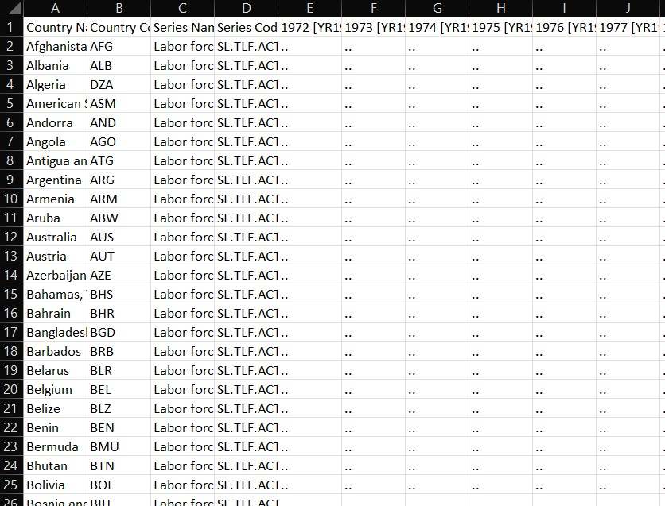
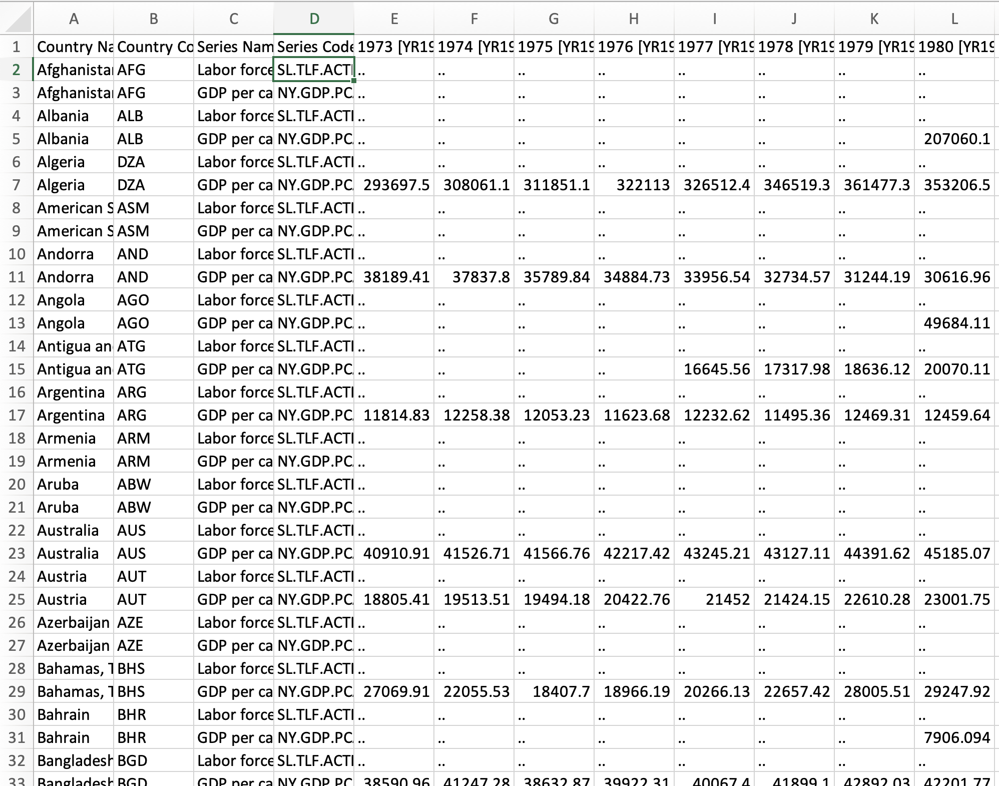

05:00
Working With Data in R
What are Tidy Data?
- Each column represents a single variable
- Each row represents a single observation
- Each cell represents a single value
Tidy Data Example

What are Clean Data?
- Column names are easy to work with and are not duplicated
- Missing values have been dealt with
- There are no repeated observations or columns
- There are no blank observations or columns
- The data are in the proper format
- For example dates should be formatted as dates
Messy Data Example

Let’s Download Some Messy Data
- Produce a folder called “data” in your course modules project folder
- Download some messy WB data from WB
- Make it one variable other than FLFP
- Download as a CSV file with a unique file name and store in your data folder
Let’s Read the Data Into R
Store the data as an object with read_csv() from the readr package:
# Load readr
library(readr)
# Read data from csv file into an object called "wb_data_messy"
wb_data_messy <- read_csv("data/your_file_name.csv")What is in That Data Frame?
You can view data columns and column types with dplyr glimpse():
# load dplyr
library(dplyr)
# View the data
glimpse(wb_data_messy)Also try viewing with View("wb_data_messy") or by clicking on the object in the Environment field.
How Can We Fix It?
- Pivot the data from wide to long form
- Change year and data to numeric
- Clean up the column names
Pivot Longer
pivot_longer() takes three arguments:
- cols - which columns you want to pivot
- names_to - the name of the column where the old column names are going to (identifier)
- values_to - the name of the column where the values are going to
Let’s Fill in the Blanks
Can you get pivot_longer() to work?
# Load tidyr
library(tidyr)
# Reshape the data
___ <- ___ |>
pivot_longer(
cols = ___
names_to = ___
values_to = ___
)
glimpse()05:00
Solution
# Load tidyr
library(tidyr)
# Reshape the data
wb_data <- wb_data_messy |>
pivot_longer(
cols = `1973 [YR1973]`: `2022 [YR2022]`, # columns to pivot
names_to = "year", # new identifier column
values_to = "flfp" # column with numeric values
)
# View the data
glimpse(wb_data)Now Let’s Change Variables to Numeric
# Fix year and flfp
wb_data <- wb_data |> # replace original data frame
mutate(year = substring(year, 1, 4)) |> # truncate year
mutate_at(c("year", "flfp"), as.numeric) # change vars to numeric
# View the data
glimpse(wb_data)mutateis used to change (or create) a single variablemutate_at()is used to make changes to multiple variables at once
Then We Can Clean Our Variable Names
Very simple: use clean_names() from the janitor package!
# Load janitor
library(janitor)
# Apply clean_names() to wb_data, store in new data frame called wb_data_clean
wb_data_clean <- wb_data |>
clean_names() Write as CSV to New File
Use write_csv() from readr to save the clean data.
# Write wb_data_clean to a csv file
write_csv(wb_data_clean, "data/wb_data_clean.csv")
# View the data
glimpse(wb_data_clean)What About Multiple Variables?

Step 1: Pivot Years Into One Column
Use pivot_longer() to get the years into one column and the values into another like we did before, but label the numeric column “values”:
Step 2: Pivot Series Into Columns
Now drop series name and use pivot_wider() to separate the series into separate columns:
wb_data_multicolum <- messy_multicolumn_df |>
select(-`Series Name`) # dropping series name
# Reshape the data
tidy_data <- wb_data_multicolumn |>
pivot_wider(
names_from = `Series Code`, # column with series names
values_from = "values" # column with numeric values
)
# View the data
glimpse(wb_data)What if We Have Data in an Excel File?
- Follow same steps as with CSV file, but use
read_excel()to read in the data instead ofread_csv - The
readrcheatsheet is helpful in figuring out stuff like this!
Ten Minute Challenge!
- Download more than one variable from the WB in Excel
- Use pivot longer to put years in one column and values in another
- Use pivot wider to separate the series into columns
- Change variable names
- Change variable types
- Clean variable names
- Save clean data as new Excel file
10:00